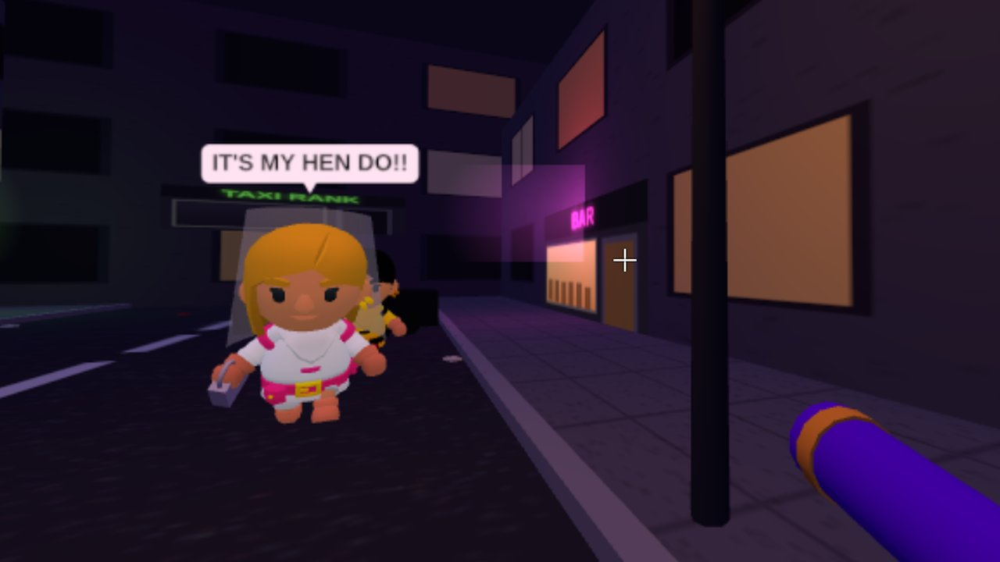

PIE HARD
NEW! Our first proper 3D game – five levels. Fight Wigan's finest down Westfield Street, survive Parr and the giant ants of the Burgies, take on the geese of Taylor Park, dodge the traffic on the East Lancs and uncover the secret of Crank Caverns. New on Westfield Street: nip into Lucky Strike amusements to play the other arcade games and the bandits, or try to pull in Nexus before the lights come up at 2am. Pies, mushy peas, barm-cake grenades and aarf-knackers, with Brian Thong on the radio and 25 hidden SHCN scoops to find. Play on a computer, or on your phone turned sideways.